df |> DT::datatable(df, rownames = F)1 Intro
I had a vision for turning my mess of a backyard into a high desert meadow. So, I planted a mixture of native grasses and wildflowers. The former is comprised of 12 warm-season grasses; the latter a collection of 18 southwest annuals/perennials. Things grow for sure. But I don’t know what is what, or what is weed.
I wanted an online reference guide specific to the 30 species of wildflower and grass in my meadow. And I wanted to build this programmatically, using a single block of code, based on a simple table of scientific/common names. While also having a table of contents, headers, etc in quarto.
1.1 Meadow
2 Building guide
Process:
Collect photos for each genus/species from Google using the
photomoepackage;collect a sentence or two of species description from Wikipedia using the
quicknewspackage; andoutput everything in one fell swoop.
The code below is for the wildflower section; we do the same thing again for grasses. The trick, which you can’t see below, is the chunk option results = 'asis', which basically allows you to generate raw markdown by cat-ing and print-ing everything. See this section of the R Markdown Cookbook for a complete discussion.
for(j in 1:18){
## get photos fro google -- build collage
link0 <- photomoe::img_get_gurls(df$scientific[j])
photomoe::img_download_images(link = link0,
dir = tempdir(),
prefix = df$scientific[j])
gg <- photomoe::img_build_collage(
paths = list.files(tempdir(), full.names = T),
dimx = 5,
dimy = 4,
prefix = df$scientific[j])
## get first p node from wikipedia
urls <- paste0('https://en.wikipedia.org/wiki/',
gsub(' ', '_', df$scientific[j]))
wko <- quicknews::get_site(urls) |>
subset(type == 'p' & nchar(text) > 3) |>
slice(1) |>
mutate(text = gsub('\\[[0-9]\\]', '', text))
##output
cat('\n\n### ', df$common[j], '\n', '> ',
df$scientific[j], '\n\n')
par(bg = 'white', mar=c(0,0,0,0))
plot(gg)
if(nrow(wko) > 0){cat('\n', '> ', wko$text)}
cat('\n\n ---')
}3 Wildflowers
3.1 Plains Coreopsis
Coreopsis tinctoria
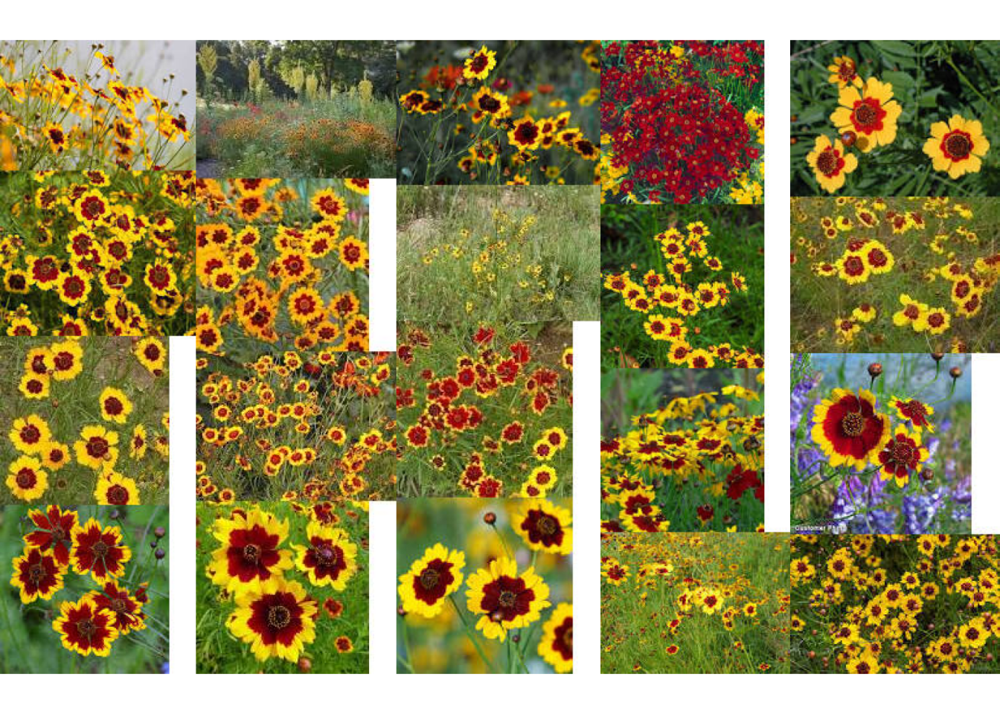
Plains coreopsis, garden tickseed,golden tickseed, or calliopsis, Coreopsis tinctoria, is an annual forb. The plant is common in Canada (from Quebec to British Columbia), northeast Mexico (Coahuila, Nuevo León, Tamaulipas), and much of the United States, especially the Great Plains and Southern states where it is often called “calliopsis.” The species is also widely cultivated and naturalized in China.
3.2 California Poppy
Eschscholzia
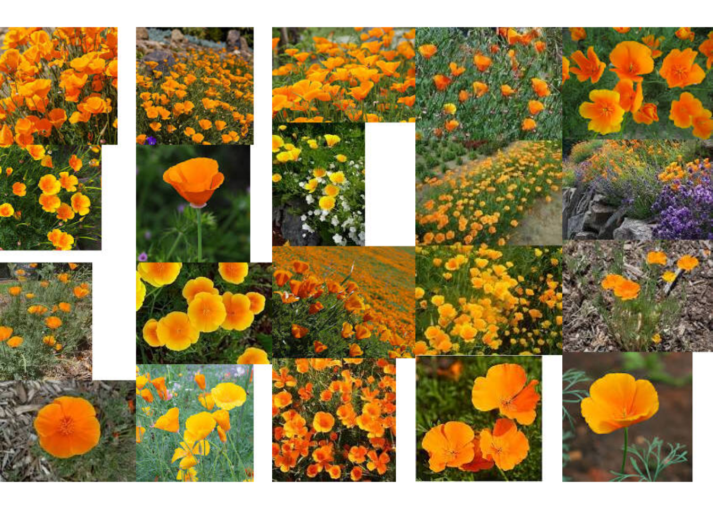
Eschscholzia /ɛˈʃɒltsiə/ is a genus of 12 annual or perennial plants in the Papaveraceae (poppy) family. The genus was named after the Baltic German/Imperial Russian botanist Johann Friedrich von Eschscholtz (1793–1831). All species are native to Mexico or the southern United States.
3.3 Mexican Gold Poppy
Eschscholzia mexicana
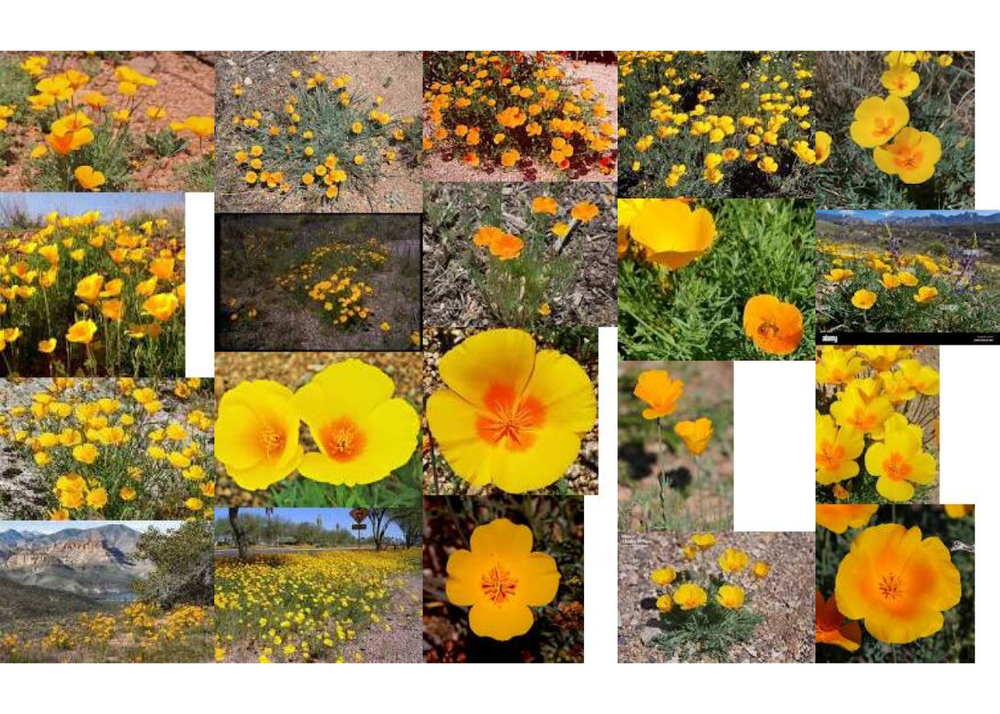
Eschscholzia californica, the California poppy, golden poppy, California sunlight or cup of gold, is a species of flowering plant in the family Papaveraceae, native to the United States and Mexico. It is cultivated as an ornamental plant flowering in summer (spring in southern Australia), with showy cup-shaped flowers in brilliant shades of red, orange and yellow (occasionally pink and white). It is also used as food or a garnish. It became the official state flower of California in 1903.
3.4 Indian Blanket
Gaillardia pulchella
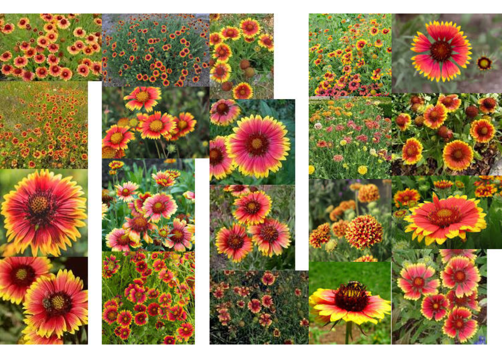
Gaillardia pulchella (firewheel, Indian blanket, Indian blanketflower, or sundance) is a North American species of short-lived perennial or annual flowering plants in the sunflower family.
3.5 Bird’s Eyes
Gilia tricolor
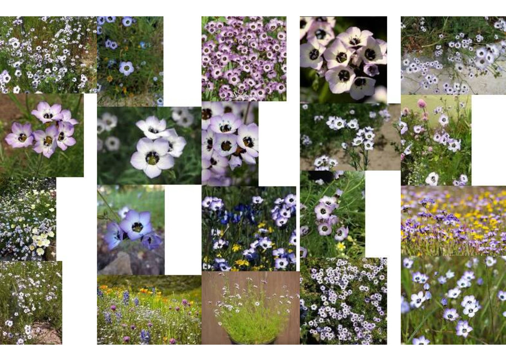
It is native to the Central Valley and foothills of the Sierra Nevada and Coast Ranges in California. Its native habitats include open, grassy plains and slopes below 2,000 feet (610 m).
3.6 Blue Flax
Linum perenne lewisii
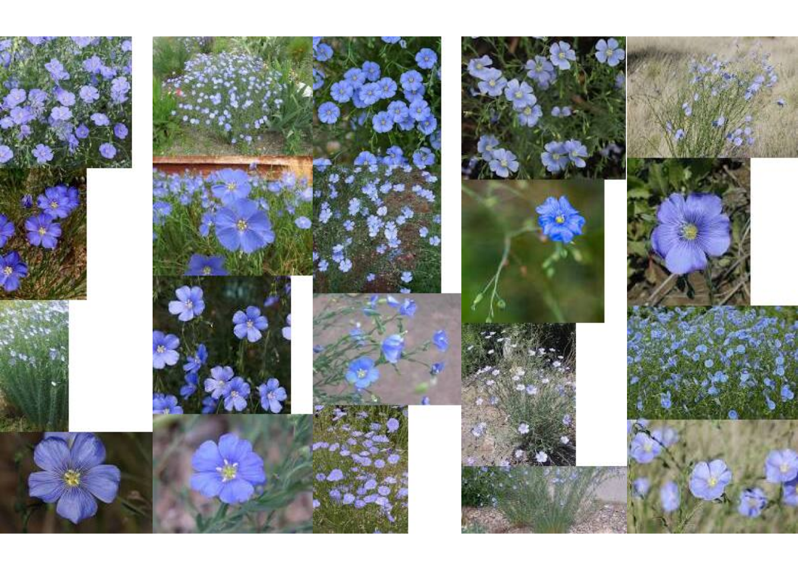
Linum lewisii (Linum perenne var. lewisii) (Lewis flax, blue flax or prairie flax) is a perennial plant in the family Linaceae, native to western North America from Alaska south to Baja California, and from the Pacific Coast east to the Mississippi River. It grows on ridges and dry slopes, from sea level in the north up to 11,000 feet (3,400 metres) in the Sierra Nevada.
3.7 Tidy Tips
Layia platyglossa
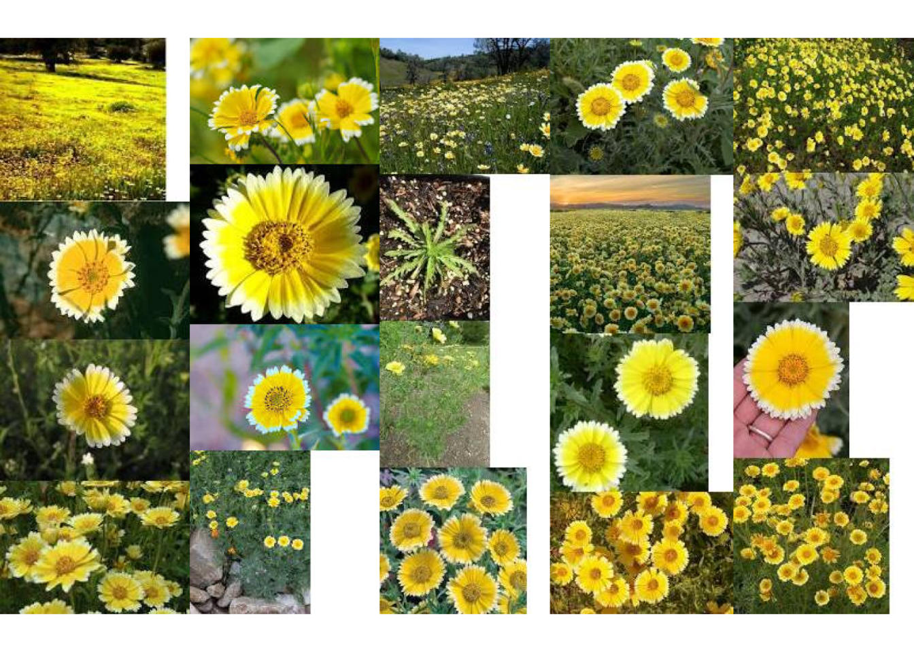
Tidytips was formerly found throughout low-elevation dry habitats in California including the Mojave Desert and into Arizona and Utah. In pre-European times this plant was common in solid stands at lower elevations. Found in grassy valley floors, slopes of hills, openings in coastal sage scrub and chaparral, coastal plains, and in the High Desert. A member of Spring wildflower ‘displays,’ blooming March to June.
3.8 Arizona Lupine
Lupinus arizonicus
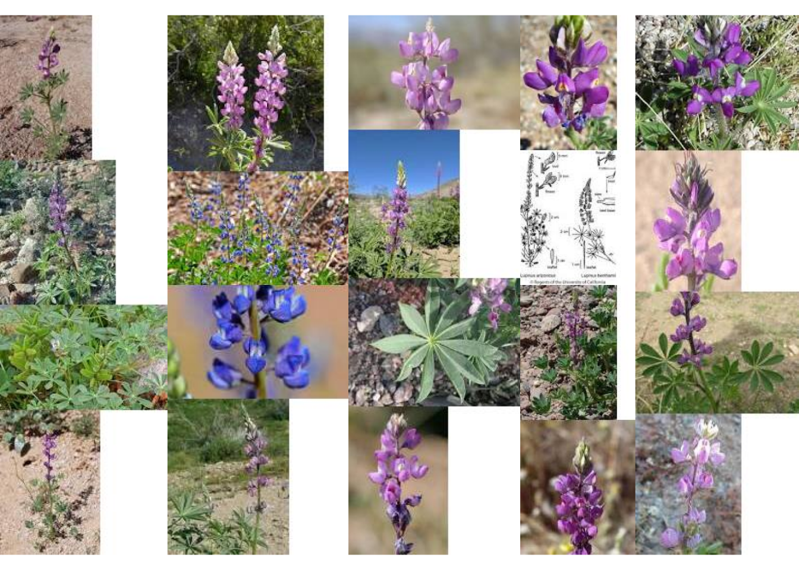
Lupinus arizonicus, the Arizona lupine, is a flowering plant in the legume family Fabaceae, native to the Mojave and Sonoran Deserts of North America, where it can be found growing in open places and sandy washes below 1,100 metres (3,600 ft) elevation. It is common around Joshua Tree National Park and Death Valley National Park in California.
3.9 Arroyo Lupine
Lupinus succulentus
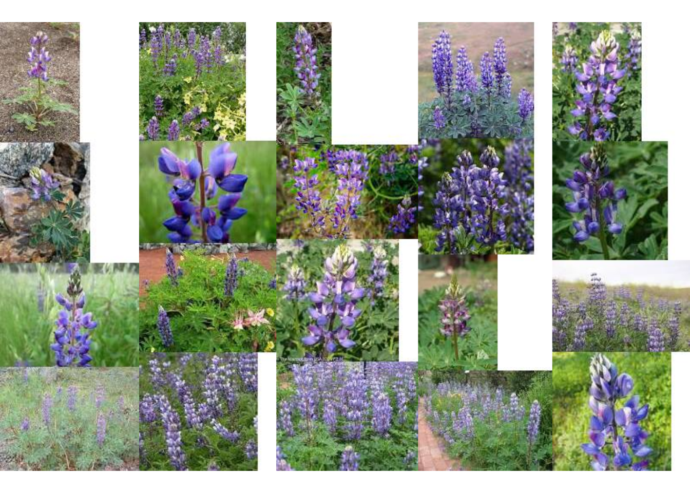
It is native to California, where it is common throughout much of the state, and adjacent sections of Arizona and Baja California. L. succulentus is known from many types of habitat and it can colonize disturbed areas.
3.10 Blazing Star
Mentzelia lindleyi
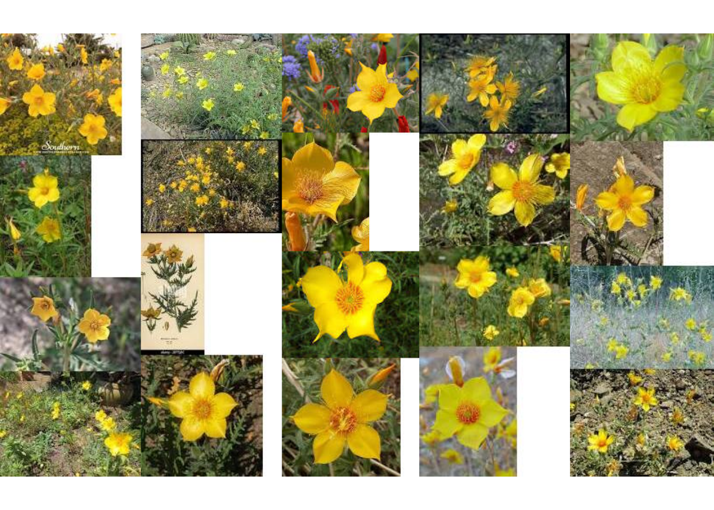
Mentzelia lindleyi, commonly known as golden bartonia,Lindley’s blazingstar,evening star, or blazing star, is an annual wildflower of western North America.
3.11 Five Spot
Nemophila maculata
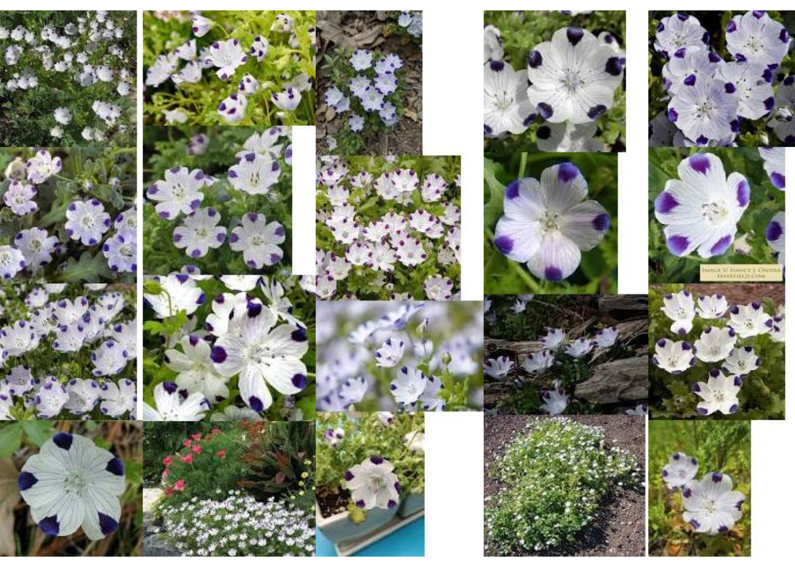
The wildflower is found on slopes in elevations between 20–1,000 metres (66–3,281 ft). The plant is endemic to California. It is most common in the Sierra Nevada, Sacramento Valley, and the California Coast Ranges in the San Francisco Bay Area.
3.12 White Evening Primrose
Oenothera pallida
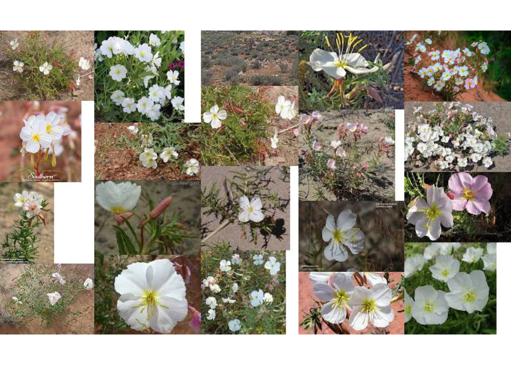
3.13 Showy Pink Evening Primrose
Oenothera speciosa
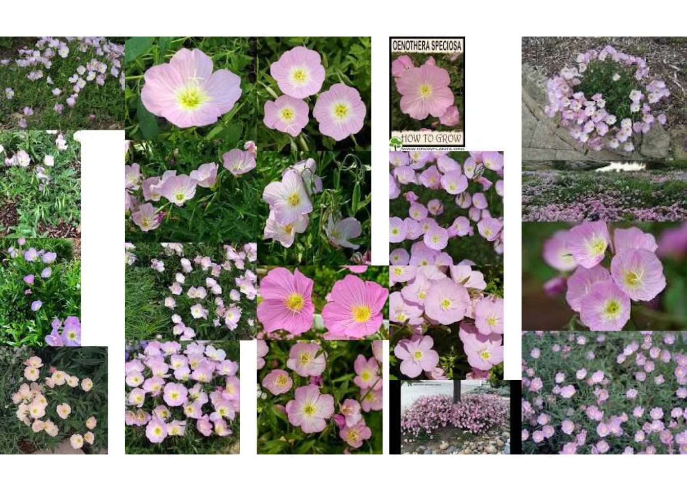
Oenothera speciosa is a species in the Oenothera (evening primrose) family known by several common names, including pinkladies, pink evening primrose, showy evening primrose, Mexican primrose, amapola, and buttercups (not to be confused with true buttercups in the genus Ranunculus).
3.14 California Bluebell
Phacelia campanularia
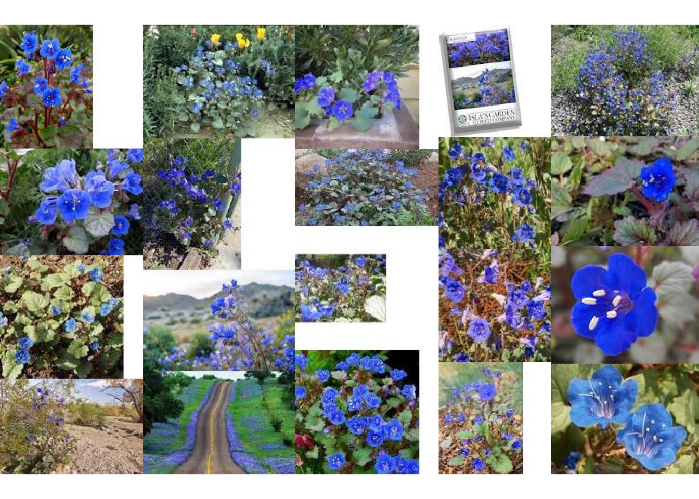
Phacelia campanularia is a species of flowering plant in the borage family, Boraginaceae, known by the common names desertbells,desert bluebells,California-bluebell,desert scorpionweed, and desert Canterbury bells. Its true native range is within the borders of California, in the Mojave and Sonoran Deserts, but it is commonly cultivated as an ornamental plant and it can be found growing elsewhere as an introduced species.
3.15 Mexican Hat
Ratibida columnifera
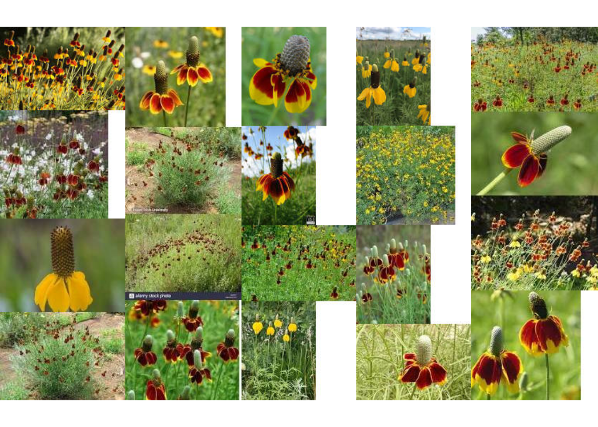
Ratibida columnifera, commonly known as upright prairie coneflower,Mexican hat, and longhead prairie coneflower, is a perennial species of flowering plant in the genus Ratibida in the family Asteraceae. It is native to much of North America and inhabits prairies, plains, roadsides, and disturbed areas from southern Canada through most of the United States to northern Mexico.
3.16 Prairie Aster
Aster tanacetifolius
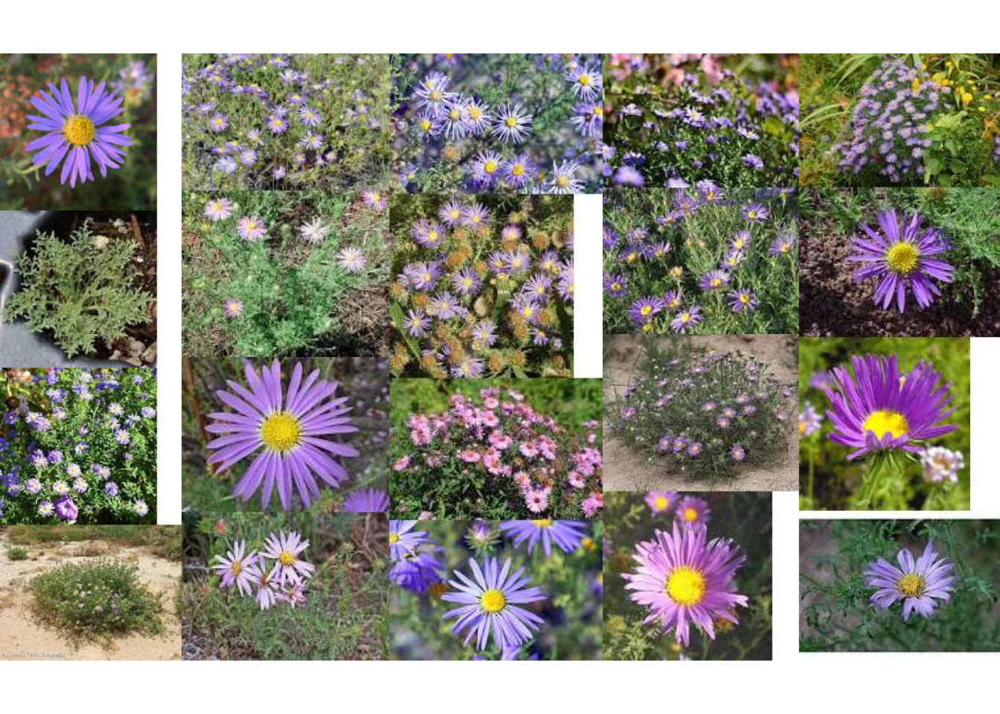
3.17 Desert Marigold
Baileya multiradiata
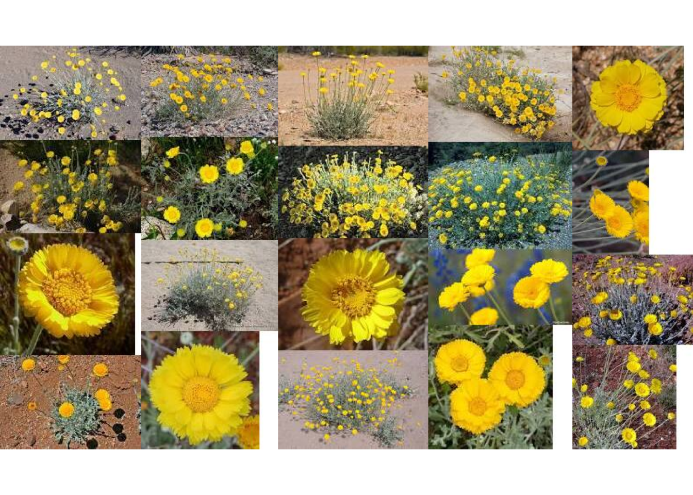
Baileya multiradiata is a North American species of sun-loving wildflowers native to the deserts of northern Mexico and the Southwestern United States. It has been found in the States of Sonora, Chihuahua, Coahuila, Durango, Aguascalientes, California, Arizona, Nevada, Utah, New Mexico, and Texas.
3.18 Farewell to Spring
Clarkia unguiculata
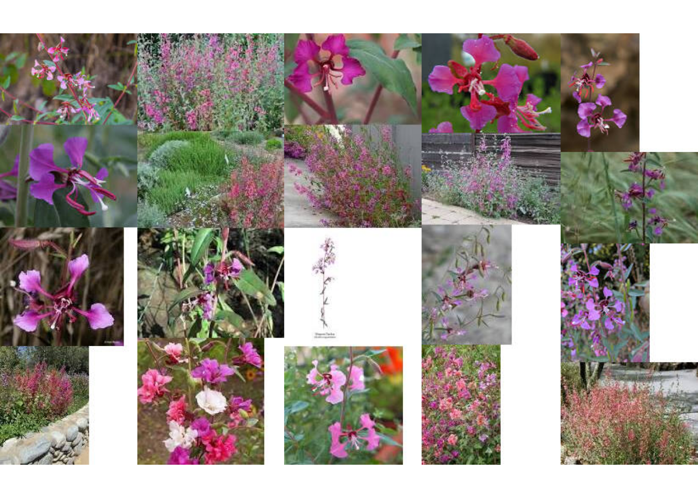
Clarkia unguiculata is a species of wildflower known by the common name elegant clarkia or mountain garland. This plant is endemic to California, where it is found in many woodland habitats. Specifically it is common on the forest floor of many oak woodlands, along with typical understory wildflowers that include Calochortus luteus, Cynoglossum grande and Delphinium variegatum.C. unguiculata presents a spindly, hairless, waxy stem not exceeding a meter in height and bears occasional narrow leaves. The showy flowers have hairy, fused sepals forming a cup beneath the corolla, and four petals each one to 2.5 centimeters long. The paddle-like petals are a shade of pink to reddish to purple and are slender and diamond-shaped or triangular. There are eight long stamens, the outer four of which have large red anthers. The stigma protrudes from the flower and can be quite large. Flowers of the genus Clarkia are primarily pollinated by specialist bees found in their native habitat “Clarkias independently developed self-pollination in 12 lineages.”
4 Grasses
4.1 Blue grama, Hachita
Bouteloua gracilis
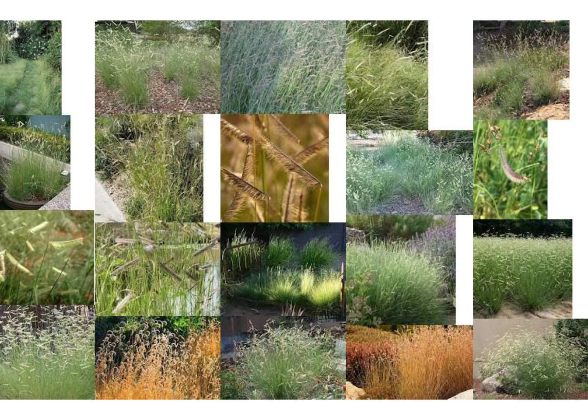
Bouteloua gracilis, the blue grama, is a long-lived, warm-season (C4) perennial grass, native to North America.
4.2 Little bluestem
Schizachyrium scoparium
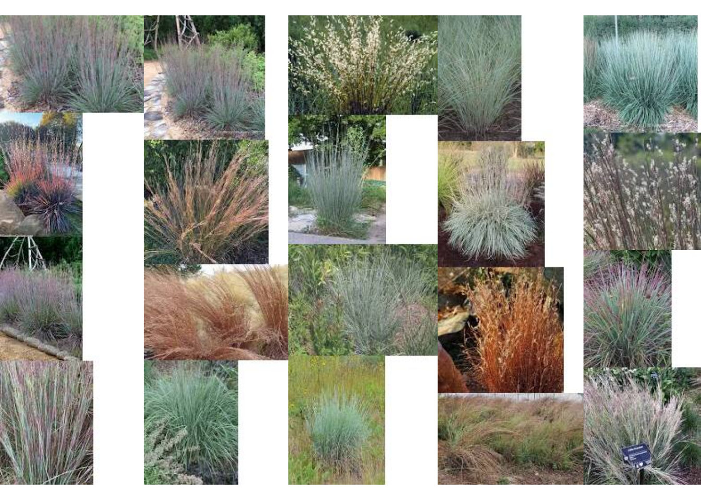
Schizachyrium scoparium, commonly known as little bluestem or beard grass, is a species of North American prairie grass native to most of the contiguous United States (except California, Nevada, and Oregon) as well as a small area north of the Canada–US border and northern Mexico. It is most common in the Midwestern prairies and is one of the most abundant native plants in Texas grasslands.
4.3 Indian Ricegrass
Achnatherum hymenoides
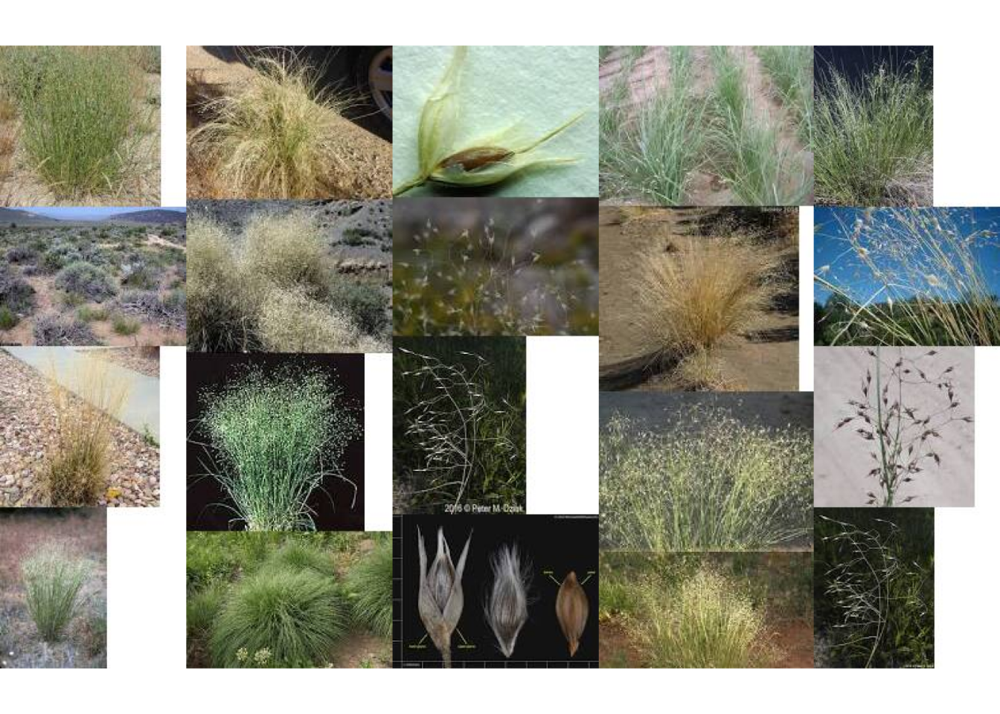
Eriocoma hymenoides (common names: Indian ricegrass and sand rice grass) is a cool-season, perennial bunchgrass with narrow, rolled leaf blades. It is native to western North America east of the Cascades from British Columbia and Alberta south to southern California, northeastern Mexico, and Texas.
4.4 Sideoats grama, El Reno
Bouteloua curtipendula
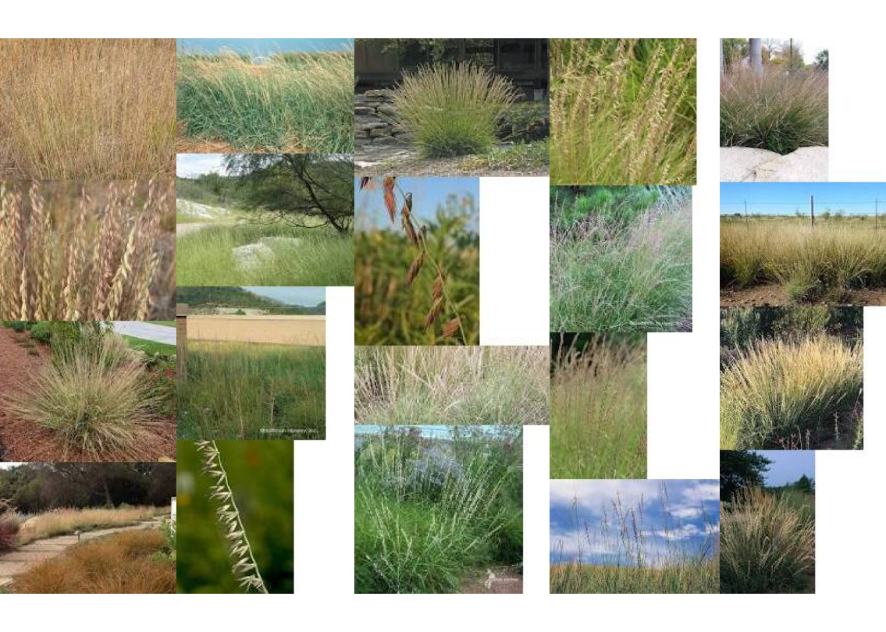
Bouteloua curtipendula, commonly known as sideoats grama, is a perennial, short prairie grass that is native throughout the temperate and tropical Western Hemisphere, from Canada south to Argentina.
4.5 Galleta, Viva
Hilaria jamesii
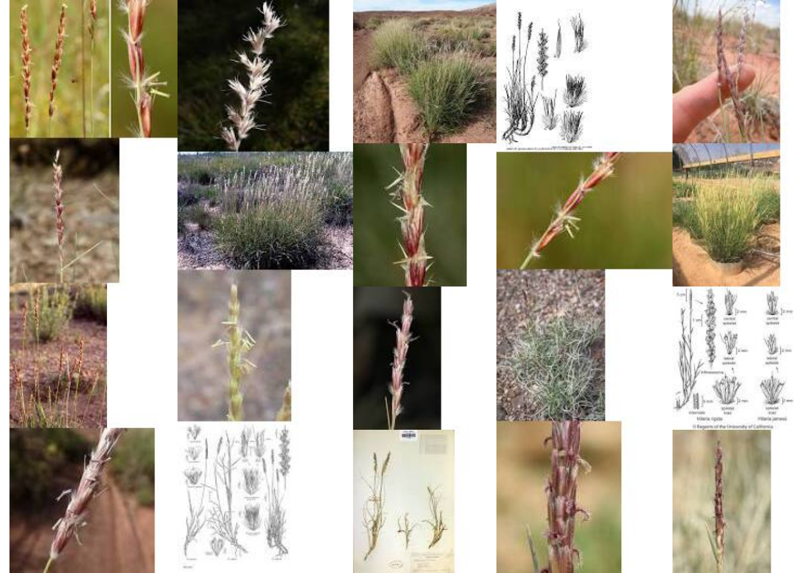
It is native to the southwestern United States, where it is widespread in scrub, woodland, grassland, and plateau habitat. It is tolerant of arid environments such as desert floors. It is common in the northern Mojave Desert.
4.6 Alkali sacaton, VNS
Sporobolus airoides
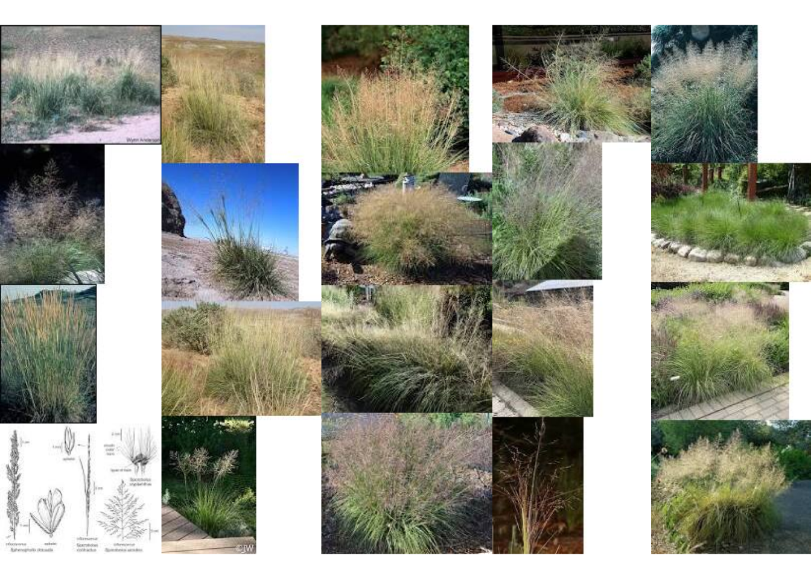
Sporobolus airoides is a species of grass known by the common name alkali sacaton. It is native to western North America, including the Western United States west of the Mississippi River, British Columbia and Alberta in Canada, and northern and central Mexico. It grows in many types of habitat, often in alkali soils, such as in California desert regions.
4.7 Western wheatgrass, Arriba
Pascopyrum smithii
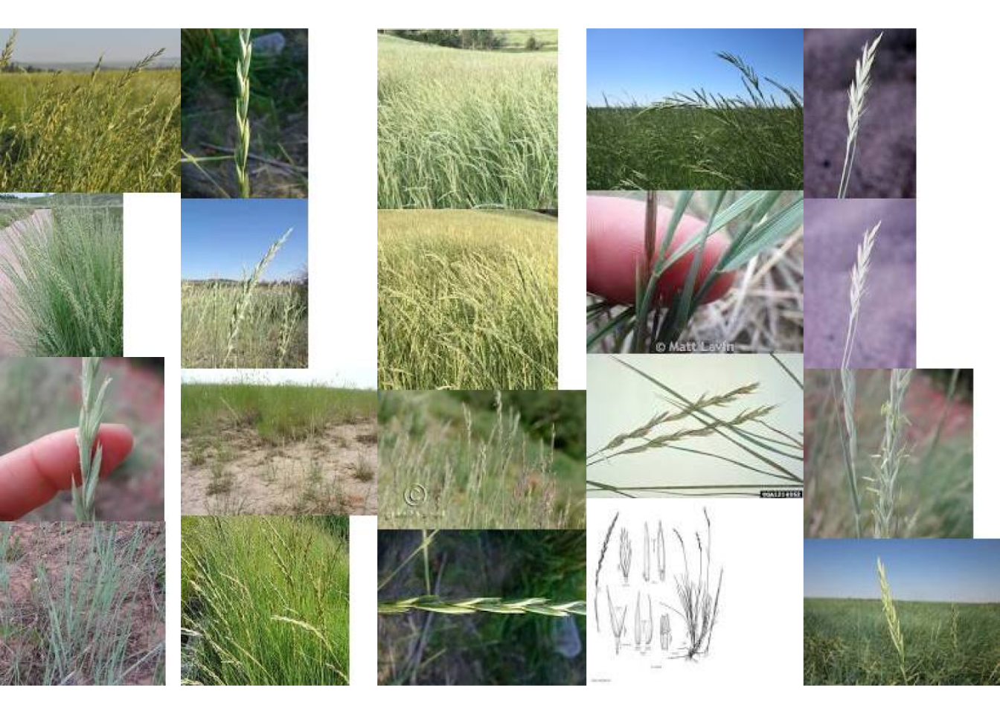
Pascopyrum is a monotypic genus of grass containing the sole species Pascopyrum smithii, which is known by the common names western wheatgrass and red-joint wheatgrass, after the red coloration of the nodes. It is native to North America.
4.8 Sand dropseed, VNS
Sporobolus cryptandrus
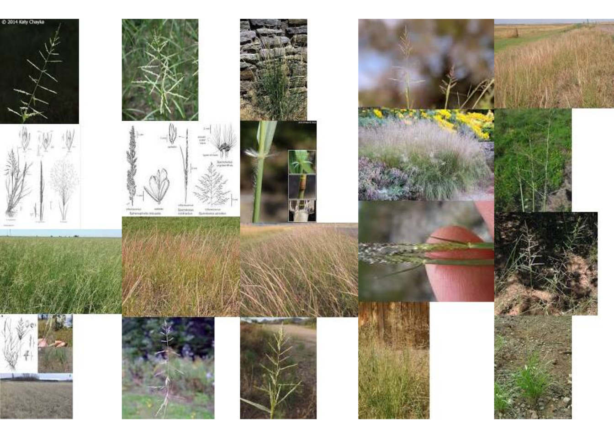
Sporobolus cryptandrus is a species of grass known as sand dropseed. It is native to North America, where it is widespread in southern Canada, most of the United States, and northern Mexico.
4.9 Buffalo grass, Texoka
Buchloe dactyloides
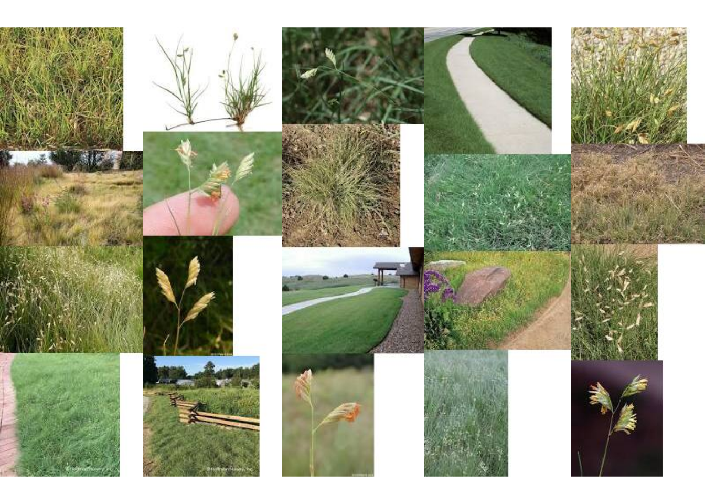
Bouteloua dactyloides, commonly known as buffalograss or a buffalo grass, is a North American prairie grass native to Canada, Mexico, and the United States. It is a shortgrass found mainly on the High Plains and is co-dominant with blue grama (B. gracilis) over most of the shortgrass prairie.
4.10 Sheep fescue, Covar
Festuca ovina
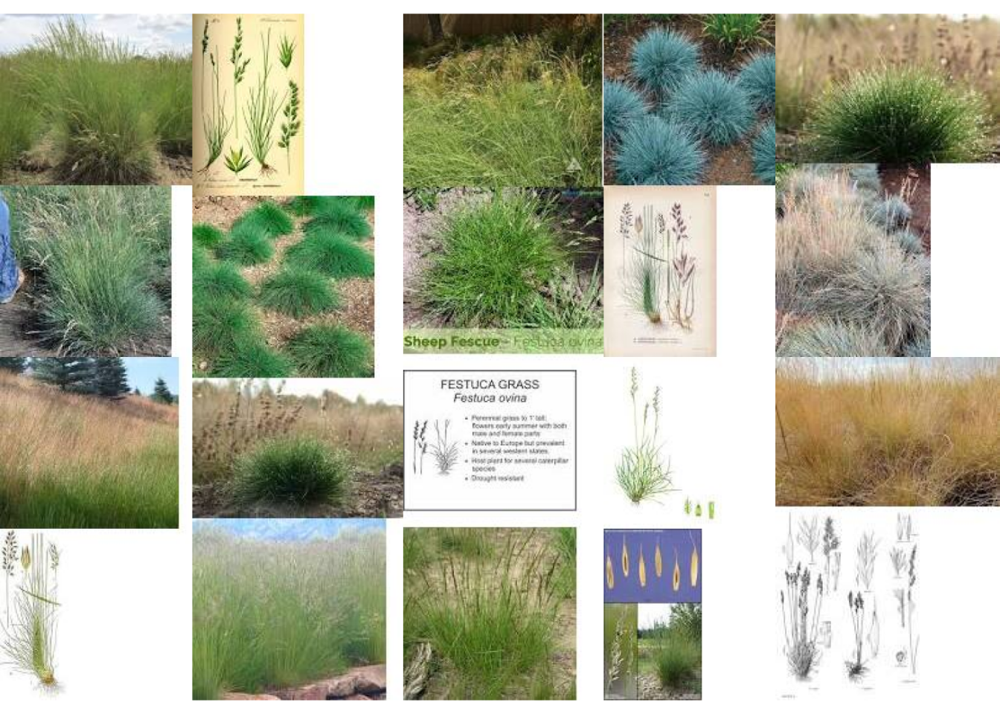
Festuca ovina, sheep’s fescue or sheep fescue, is a species of grass. It is sometimes confused with hard fescue (Festuca trachyphylla).
4.11 Green needlegrass, Lodorm
Nassella viridula
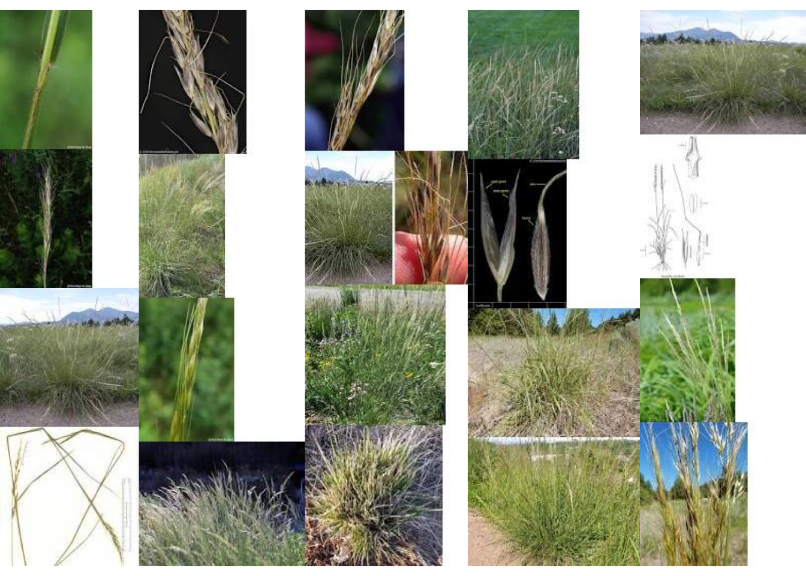
Nassella viridula is a species of grass known by the common name green needlegrass. It is native to North America, where it is widespread in western Canada and the western and central United States. It is introduced in parts of eastern North America.
4.12 Perennial ryegrass, Linn
Lolium perenne
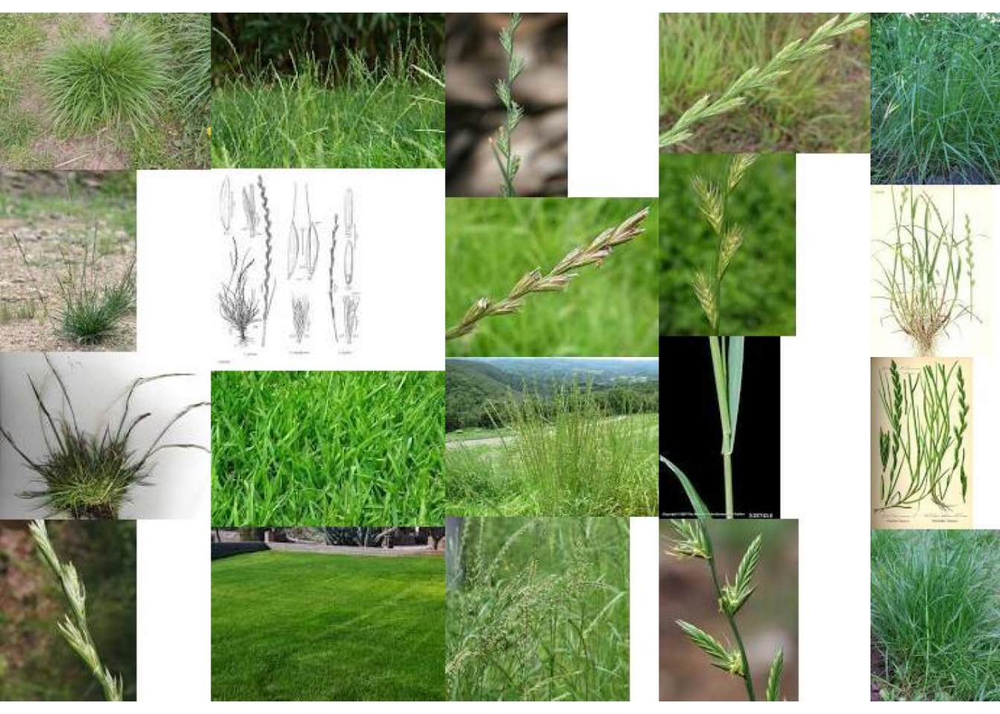
Lolium perenne, common name perennial ryegrass,[failed verification]English ryegrass, winter ryegrass, or ray grass, is a grass from the family Poaceae. It is native to Europe, Asia and northern Africa, but is widely cultivated and naturalised around the world.